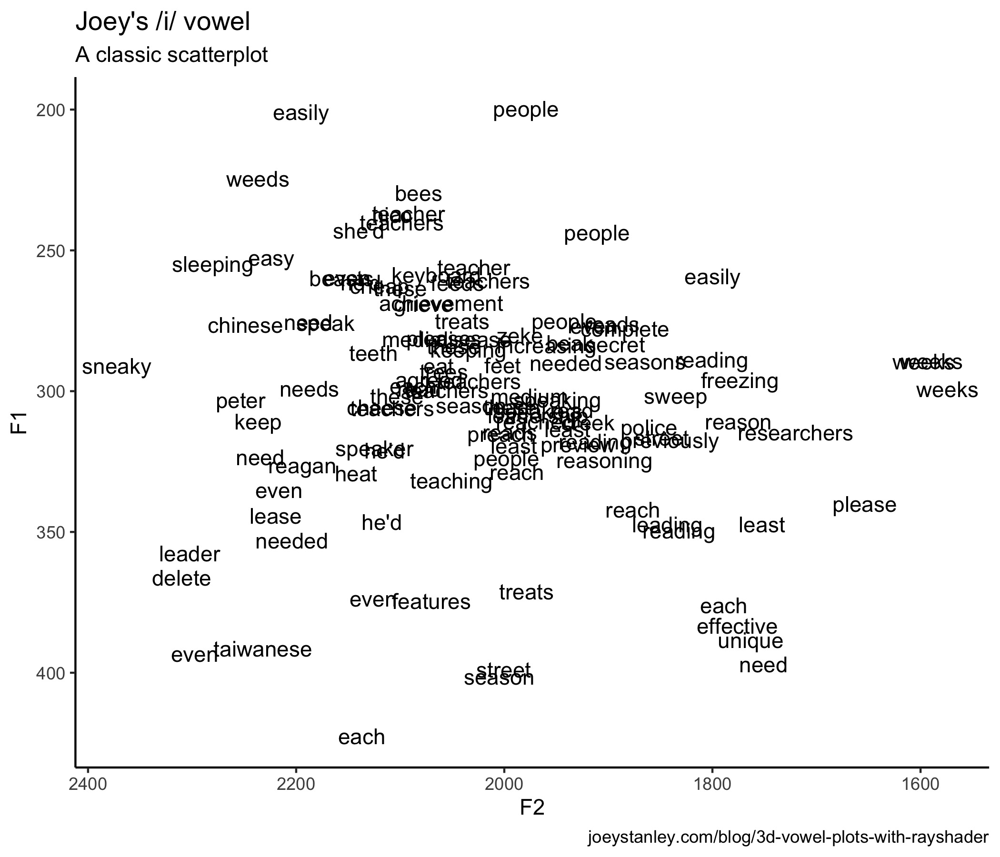

So Tyler Morgan-Wall has recently come out with the rayshader package and the R and data science Twitter community has been buzzing. I’ve seen people post some absolutely amazing 3D plots and animations. I haven’t seen any linguists using it though, so I’m hopping on that bandwagon—a little late in the game—to show what kinds of 3D visuals we can produce using vowel data.
What is rayshader?
Rayshader is an R package that makes it easy to create stunning 3D plots. My impression is that it was designed primarily with geospatial data in mind, so that you can create really nice 3D models of terrain and stuff. But recently, rayshader has been updated to take any plot created in ggplot2 and make it 3-dimensional. Here are just a few examples I found on Twitter:
First try with #rayshader #rstats pic.twitter.com/eEUq0eKSbq
— David Solito (@dsolito) March 5, 2019
Finally found the time to try out some of that sweet new #rayshader + #ggplot2, 3D functionality! Loving it üòç and can't wait to play more! pic.twitter.com/qdcjLKZKRq
— Laura Ellis (@LittleMissData) July 1, 2019
Flying over the dunes of Mars using #rayshader + #rstats + @HiRISE data
— Tyler Morgan-Wall (@tylermorganwall) August 15, 2019
(working on a camera translation API so you can üê¶fly around your rayshader scenes) pic.twitter.com/8uPIxojNKg
I just discovered the #rayshader package by @tylermorganwall. It turns a 2D ggplot2 object into a 3D object. #rstats pic.twitter.com/w0x3vy9qB3
— We are R-Ladies (@WeAreRLadies) June 27, 2019
If you’re interested in learning how to use the package to make your ggplot2 plots stand out, I’d highly recommend looking through Morgan-Wall’s tutorial. What I’m doing in this blog is essentially following that post, but using some vowel data. Let’s get to it.
library(rayshader)
library(tidyverse)By the way, the code and data for this blog post are all available as an Rmd file on my GitHub.
An F1-F2 vowel plot
Let me start with sort of a basic vowel plot. I’ll first load in some of my own vowel data, and for simplicity, I’ll just isolate tokens with stressed /i/ before obstruents. I’ll use the Mahalanobis function to filter out bad measurements.
tidy_mahalanobis, which makes it easy to implement the Mahalanobis distance within a tidyverse pipeline.my_iy <- read_csv("http://joeystanley.com/data/joey.csv") %>%
# filter it down
filter(vowel == "IY",
stress == 1,
plt_manner %in% c("stop", "fricative", "affricate")) %>%
# Keep just the columns I need
select(word, F1, F2) %>%
# There were a few bad outliers.
mutate(mahal_dist = joeyr::tidy_mahalanobis(F2, F1)) %>%
filter(mahal_dist < 10) %>%
select(-mahal_dist) %>%
print()That leaves me with 117 tokens of /i/.
2D vowel plots
Let’s look at that using a pretty traditional scatterplot.
ggplot(my_iy, aes(F2, F1, label = tolower(word))) +
geom_text() +
scale_x_reverse() + scale_y_reverse() +
coord_fixed(ratio = 2) +
theme_classic()
So, to get the 3D plot to work with rayshader, I need some variable that should act as the depth dimension. In Morgan-Wall’s example, he adopts a pretty standard technique when looking at coordinate data. You basically overlay some tessellating shape like a hexagon, count how many points are in each hexagon, and color that cell based on how may points there are in it. I haven’t seen this used too much in vowel data, other than Bill Kretzschmar’s recent work, but it’s a possibility. Fortunately, this is straightforward with geom_hex.
hex_plot <- ggplot(my_iy, aes(F2, F1)) +
geom_hex(bins = 10, size = 1, color = "black") +
scale_x_reverse() + scale_y_reverse() +
scale_fill_viridis_c(option = "C")
hex_plotAlready kind of a cool way at looking at it. But we’re just getting started.
3D vowel plots
Now make it 3D. This is really quite straightforward with plot_gg. I’m mostly using the default parameters because I don’t know enough about 3D modeling to play with some of the other features, and yet it still looks fantastic.
plot_gg(hex_plot,
height = 5, width = 7,
scale = 250, zoom = 0.6,
windowsize = c(1400, 800),
multicore = TRUE)Well that’s super cool.
By the way, here’s the code I used to export the plot to a file on my computer. I added a small bit of simulated focus/blur to it, which is always kind cool.
render_depth(focus = 0.5, focallength = 15, filename = "hex_plot.png")So now let’s make this even better!
A 3D animation
Now a static plot is awesome. Don’t get me wrong. But, turning it into an animation is even cooler. Plus, Morgan-Wall says that viewing a 3D plot from different angles is one way to turn them from gimmicky visuals to legit tools for conveying information. He says here:
“It’s difficult to interpret static 3D visualizations, as the display is an inherently 2D medium and the reader can’t accurately reconstruct the depth information of 3D data… [T]he continuous underlying substrate provides perceptual context for the missing depth information. The issue of ‘small box close, or big box far away?’ doesn’t occur with [rayshader plots], since those points can always be located in 3D space by referencing the surrounding data.”
I’m paraphrasing slightly and you should go read the full post because I believe he makes a compelling argument in favor of 3D plots, which is something I had never seen before.
So here’s the code—and the amazing thing is that it’s really just this one line!—for turning this 3D vowel plot into an animation.
render_movie(filename = "hex_plot_orbit", type = "orbit",
phi = 45, theta = 60)That orbiting thing is cool. It’s interesting to see a vowel space from all sides.
As it turns out though, you can actually adjust where the “camera” is pretty freely. Here is some code I swiped from Morgan-Wall’s tutorial that does a really slick zoom in, pan, zoom out thing.
# Set up the camera position and angle
phivechalf = 30 + 60 * 1/(1 + exp(seq(-7, 20, length.out = 180)/2))
phivecfull = c(phivechalf, rev(phivechalf))
thetavec = 0 + 60 * sin(seq(0,359,length.out = 360) * pi/180)
zoomvec = 0.45 + 0.2 * 1/(1 + exp(seq(-5, 20, length.out = 180)))
zoomvecfull = c(zoomvec, rev(zoomvec))
# Actually render the video.
render_movie(filename = "hex_plot_fancy", type = "custom",
frames = 360, phi = phivecfull, zoom = zoomvecfull, theta = thetavec)So that is definitely a new way at visualizing vowel data.
A Spectrogram
After getting all this to work, the next question I had was this: What other kind of linguistics data can be represented in 3D? I immediately thought about a spectrogram. In Praat, you’ve got a spectrogram with three continuous variables: time along the x-axis, frequency along the y-axis, and amplitude being represented by color. What if, in addition to color, we could represent amplitude with the z-axis?
As it turns out, the tricker part with this plot was trying to get the data in a format I could plot with ggplot. The 3D rendering was a snap once that was done (again, hooray for rayshader!), so if you just want to skip to the good stuff, scroll to the bottom. If you’re curious about how I hacked this, read on.
Getting a ggplot2 spectrogram
Now, I’m sure there are lots of smart people that work with audio in R and could get spectrogram data in a format suitable for ggplot in a snap. But since I process my audio almost entirely in Praat, getting this to work in R was new and a bit tricky for me. But I found a way. It might not be the best way, but it is a way.
First, I’ll use the tuneR package to process the raw .wav file. In this case, it’s a short recording of me saying the word boy. I don’t exactly know how sound is digitized, but if it is just a bunch of acoustic samples, then I presume it’s nothing more than a bunch of numbers organized in some way. And numbers I can work with.
library(tuneR)
boy_wav <- readWave("joey_boy.wav")When I use the readWave function, it loads in the audio and stores it into an R object of class Wave. Unfortunately, it’s not immediately useful to me.
boy_wav
##Wave Object
## Number of Samples: 36874
## Duration (seconds): 0.84
## Samplingrate (Hertz): 44100
## Channels (Mono/Stereo): Mono
## PCM (integer format): TRUE
## Bit (8/16/24/32/64): 16 So the task is to extract the data I want into a plain ol’ dataframe. Again, I’m sure there’s a better way, but I used the inputw function from the seewave package even though it explicitly says in the documentation that it is “not to be called by the user.” But using these functions, I was able to access that list.
library(seewave)
input <- inputw(wave = boy_wav)
wave <- input$w
head(wave)
## [,1]
## [1,] 127
## [2,] 125
## [3,] 123
## [4,] 131
## [5,] 134
## [6,] 131So now, the wave object is very long and has one row for each sample. Okay, that means I’m getting close. I’ll take what I’ve got, convert it into a tibble, add the sample number, and then add a time variable to it, based on the sampling rate in the original audio.
wav_df <- wave %>%
as_tibble() %>%
rename(hz = V1) %>%
rowid_to_column("sample") %>%
mutate(t = sample / boy_wav@samp.rate) %>%
print()
## # A tibble: 36,874 x 3
## sample hz t
## <int> <int> <dbl>
## 1 1 127 0.0000227
## 2 2 125 0.0000454
## 3 3 123 0.0000680
## 4 4 131 0.0000907
## 5 5 134 0.000113
## 6 6 131 0.000136
## 7 7 135 0.000159
## 8 8 134 0.000181
## 9 9 142 0.000204
## 10 10 140 0.000227
## # … with 36,864 more rowsThe next question then is whether I can plot this to make it look like a spectrogram. The way it’s structured now, it’s a cinch to plot the wave form:
ggplot(wav_df, aes(t, hz)) +
geom_line()But I would kinda like to see a spectrogram. Fortunately, the phonTools package by Santiago Barreda does exactly what I want! This package can do a heck of a lot more than plot a single spectrogram, and I encourage you to explore the package more. But for now, I’ll do a little more hacking to get the visual I want.
library(phonTools)So first off, phonTools already has a spectrogram function that can plot the data as is.
spectrogram(wav_df$hz)This is an excellent plot and I appreciate the work that goes into creating it. But, being the nit-picky person I am, I wanted to have some more control over the plot and I wanted to use ggplot2 so that I could then incorporate rayshader. The data that’s being plotted had to have been processed in some way because it’s not a waveform anymore. I wanted to find how it transformed it from a time-vs.-amplitude format to the time-vs.-frequency formant you see above.
I did some digging and I just could not find a way to extract the data that gets eventually plotted in spectrogram. I mean, it has to have gone through some Fourier analysis or something first to be able to extract frequencies. So, I figure if the spectrogram function could do it, the key was in the function itself. Thanks to R’s naturally open-source nature, I popped the hood of the code behind spectrogram and extracted the portion I needed. So, basically what you see here is a version of the spectrogram function from phonTools written by Barreda, except the final plotting portion is commented out. I’ll admit, I don’t fully understand what all this code is doing, but after lots of trial and error, it works, so I’ll leave it at that.
joey_spec <- function (sound, fs = 22050, windowlength = 5, timestep = -1000,
padding = 10, preemphasisf = 50, maxfreq = 5000, colors = TRUE,
dynamicrange = 50, nlevels = dynamicrange, maintitle = "",
show = TRUE, window = "kaiser", windowparameter = 3, quality = FALSE)
{
if (class(sound) == "ts")
fs = frequency(sound)
if (class(sound) == "sound") {
fs = sound$fs
sound = sound$sound
}
n = ceiling((fs/1000) * windowlength)
if (n%%2)
n = n + 1
if (timestep > 0)
timestep = floor(timestep/1000 * fs)
if (timestep <= 0)
timestep = floor(length(sound)/-timestep)
if (preemphasisf > 0)
sound = preemphasis(sound, preemphasisf, fs)
spots = seq(floor(n/2), length(sound) - n, timestep)
padding = n * padding
if ((n + padding)%%2)
padding = padding + 1
N = n + padding
spect = sapply(spots, function(x) {
tmp = sound[x:(x + n - 1)] * windowfunc(sound[x:(x + n - 1)], window, windowparameter)
tmp = c(tmp, rep(0, padding))
tmp = tmp - mean(tmp)
tmp = fft(tmp)[1:(N/2 + 1)]
tmp = abs(tmp)^2
tmp = log(tmp, 10) * 10
})
spect = t(spect)
for (i in 1:nrow(spect)) spect[i, 1] = min(spect[i, -1])
hz = (0:(N/2)) * (fs/N)
times = spots * (1000/fs)
rownames(spect) = as.numeric(round(times, 2))
colnames(spect) = as.numeric(round(hz, 2))
if (colors == "alternate")
colors = c("black", "red", "orange", "yellow", "white")
if (maxfreq > (fs/2))
maxfreq = fs/2
spect = spect - max(spect)
# specobject = list(spectrogram = spect, fs = fs, windowlength = windowlength,
# timestep = timestep, dynamicrange = dynamicrange, colors = colors,
# maxfreq = maxfreq)
# class(specobject) = "spectrogram"
# if (show == TRUE)
# plot(specobject, ylim = c(0, maxfreq), quality = quality)
# invisible(specobject)
return(spect)
}With this modification of the function, I can now convert my data from waveform format to spectrogram format. What you se here is a giant spreadsheet where each row is a time point, each column is a frequency, and the cells contain amplitude (or something) at that time for that frequency.
spec <- joey_spec(wav_df$hz) %>%
as.tibble() %>%
rowid_to_column("sample") %>%
print()
## # A tibble: 1,020 x 618
## sample `0` `17.9` `35.8` `53.69` `71.59` `89.49` `107.39` `125.28`
## <int> <dbl> <dbl> <dbl> <dbl> <dbl> <dbl> <dbl> <dbl>
## 1 1 -80.3 -53.7 -53.5 -53.1 -52.6 -52.1 -51.7 -51.3
## 2 2 -77.9 -42.7 -42.8 -43.0 -43.2 -43.5 -43.9 -44.3
## 3 3 -82.5 -33.3 -33.4 -33.5 -33.6 -33.8 -34.1 -34.4
## 4 4 -71.0 -41.9 -39.6 -37.4 -35.6 -34.1 -32.9 -31.8
## 5 5 -73.0 -27.7 -27.7 -27.6 -27.5 -27.4 -27.3 -27.2
## 6 6 -74.6 -39.4 -39.2 -38.9 -38.5 -38.1 -37.6 -37.0
## 7 7 -88.0 -39.5 -39.5 -39.6 -39.6 -39.7 -39.8 -39.9
## 8 8 -93.7 -33.5 -33.5 -33.6 -33.7 -33.9 -34.0 -34.2
## 9 9 -69.6 -34.5 -34.6 -34.8 -35.0 -35.3 -35.7 -36.0
## 10 10 -83.2 -33.6 -33.6 -33.7 -33.7 -33.7 -33.8 -33.9
## # … with 1,010 more rows, and 609 more variables: [truncated for space]This isn’t the most useful format, so I’ll do some reshaping with gather and turn it into a very tall spreadsheet with 629,340 rows.
spec_tall <- spec %>%
gather(hz, value, -sample) %>%
mutate(hz = as.double(hz)) %>%
print()
## # A tibble: 629,340 x 3
## sample hz value
## <int> <dbl> <dbl>
## 1 1 0 -80.3
## 2 2 0 -77.9
## 3 3 0 -82.5
## 4 4 0 -71.0
## 5 5 0 -73.0
## 6 6 0 -74.6
## 7 7 0 -88.0
## 8 8 0 -93.7
## 9 9 0 -69.6
## 10 10 0 -83.2
## # … with 629,330 more rowsAnd now, finally, I’ve got my acoustic data in the format I want! Now we’re in business.
A 2D spectrogram
Okay, so using this data, I can already do a basic plot in ggplot2 to make sure it looks good.
ggplot(spec_tall, aes(sample, hz, color = value)) +
geom_point(size = 0.5, alpha = 0.03) +
scale_color_viridis_c(option = "A") +
scale_y_continuous(limits = c(0, 5000))It may not look like it, but that plot is made up of several hundred thousand dots. With that much data, a PDF would get huge since each dot has to be rendered individually. Since they all visually sort of blur together anyway, might as well simplify things and turn it into a 2D-density plot with geom_raster.
spec <- ggplot(spec_tall, aes(sample/max(sample) * 0.83, hz)) +
geom_raster(aes(fill = value), interpolate = TRUE) +
scale_y_continuous(limits = c(0, 4500)) +
scale_fill_viridis_c(option = "A") +
labs(x = "time (s)")+
theme_classic()
specThe difference visually is relatively small, other than the colors being bolder. But rather than plotting individual points, this is a mosaic of tiles all arranged neatly to fill the space. So the underlying structure is quite different, and in this case, more appropriate for transforming into a 3D plot.
A 3D spectrogram
Anyway, I’ve belabored the point for too long. Let’s now turn this into a 3D spectrogram!
plot_gg(spec,
width = 6, height = 3, scale = 300,
windowsize = c(1000, 800),
fov = 70, zoom = 0.6,
theta = 330, phi = 40,
multicore = TRUE)
render_depth(focus = 0.68, focallength = 1, filename = "spec_3D")I love this! There’s so much detail. I mean, you can really see the individual glottal pulses. Super cool.
And now I’ll use the same code from before to make a super awesome video only this time I’ll make a slight change to the viewing angle.
phivechalf = 45 + 45 * 1/(1 + exp(seq(-7, 20, length.out = 180)/2))
phivecfull = c(phivechalf, rev(phivechalf))
render_movie(filename = "spec_plot_fancy", type = "custom",
frames = 360, phi = phivecfull, zoom = zoomvecfull, theta = thetavec)Okay that is slick. I’m extremely impressed with the quality of this animation. Especially considering I know nothing about animation.
Conclusion
The rayshader package really is an impressive one and does so much work behind the scenes to make it easy for people to become amateur animators, at least with quantitative data. For right now, I’ll admit that I’m not exactly gleaning anything new from the visuals that I didn’t already know, but that doesn’t mean looking a wider variety of linguistic data using 3D animations like this won’t uncover something new. I can’t wait until my next conference presentation so I can see if I can weasel one of these in there somehow.